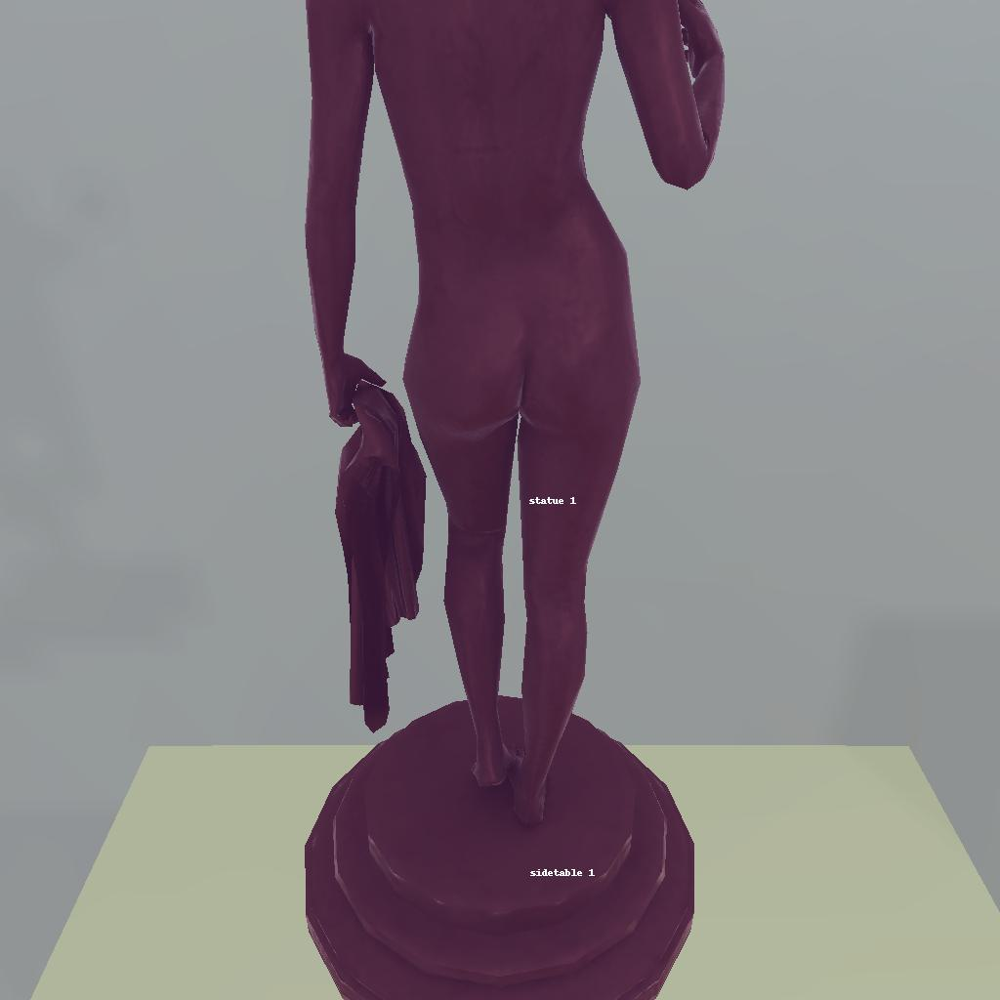

---------------------------------------------------------task: 4---------------------------------------------------------
--------------------------------------------------------------------------------------------------------------------------------------------------------------------
--------------------------------------------------------------------------------------------------------------------------------------------------------------------
Step:--------------------------------------------------------------------------2-------------------------------------------------------------------------------
----------------------------------------
VLM Prompt:
Image1:
**Instruction**
1. Analyze the provided image to identify all visible household objects, focusing on those relevant to the task description "examine the statue with the floorlamp."
2. Use the analysis of the image and the task hint "The agent must find an object of the desired type, locate and turn on a light source with the desired object in-hand." to answer the question: what is the most reasonable action in the choices for the task description "examine the statue with the floorlamp"?
4. Decide and write the answer using the template: The answer is: (i): , where i is the real number. If there is no desired object in the image, search every place based on **Initial Observation** to find the object. And if no one is exactly correct, choose a similar answer.
**Initial Observation**
You are in the middle of a room. Looking quickly around you, you can see armchair (1), coffeetable (1-2), sidetable (1), garbagecan (1), drawer (1), sofa (1), diningtable (1)
**Answer Choices**
(1): go to armchair 1
(2): go to coffeetable 1
(3): go to garbagecan 1
(4): go to drawer 1
(5): go to sofa 1
(6): go to coffeetable 2
(7): go to diningtable 1
(8): put statue 1 in/on sidetable 1
(9): examine statue 1
(10): examine sidetable 1
**Answer**
Let's think step by step by following the instructions.
----------------------------------------
----------------------------------------
Original Response:
Image1 shows a statue placed on what appears to be a sidetable labeled as "sidetable 1." However, there is no floorlamp visible in the image. Based on the task description "examine the statue with the floorlamp" and the task hint indicating the need to find a light source and turn it on with the object in hand, we must locate a floorlamp.
From the **Initial Observation**, we know of various pieces of furniture in the room, but none of them are explicitly mentioned as a floorlamp. However, floorlamps are often placed next to furniture like sofas or armchairs for reading purposes or near diningtables for ambient lighting.
Given the choices, none of them directly suggest finding or turning on a floorlamp. However, since the task requires examining the statue with the floorlamp, the most reasonable action would be to first locate the floorlamp, which is not visible in the image. Therefore, we must search the room based on the **Initial Observation**.
The answer is: (5): go to sofa 1. This action is chosen with the assumption that a floorlamp may be near the sofa, which is a common placement for floorlamps in a household setting. If the floorlamp is found there, the next step would be to turn it on to examine the statue with it.
----------------------------------------
----------------------------------------
>>> Refine Original VLM Response and Get Pure Action: go to sofa 1
----------------------------------------
-----------------------------------------------------------------
Running time: 13.611396312713623 seconds
Total Money: 1.2592000000000003
-----------------------------------------------------------------
-----------------------------------------------------------------
Text Observation:You arrive at loc 5. On the sofa 1, you see a floorlamp 1, and a laptop 1.
-----------------------------------------------------------------
UNSUCCEED